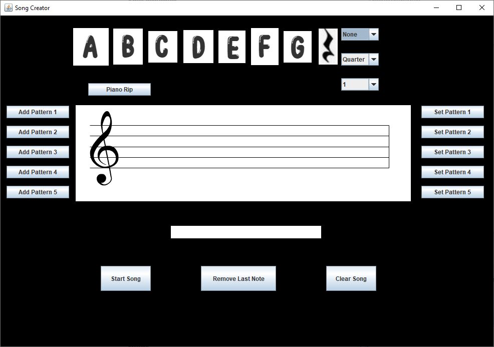

Song Creation App
The song creation application is designed for users with limited music knowledge to create basic songs. This application was built with JFugue. The application allows for its user to click on different notes to add it to the current queue for the song. The user has options to clear, remove the last note, change the pitch, octive, note duration, set patterns, and add the set pattern to the queue
